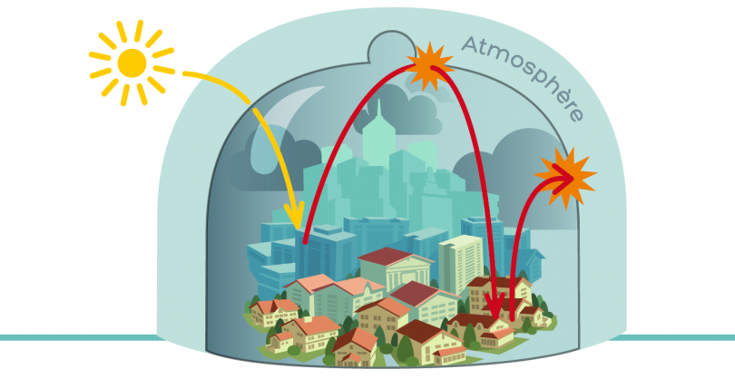
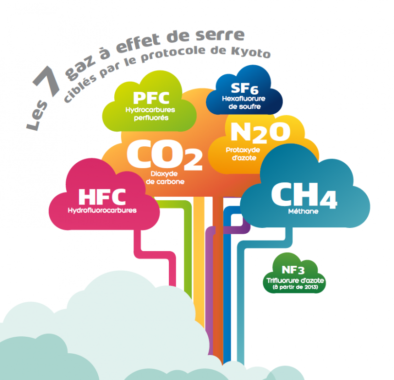

Pourquoi la Terre chauffe ?
L’effet de serre
La Terre reçoit en permanence de l’énergie du soleil. La partie de cette énergie qui n’est pas réfléchie par
l’atmosphère, notamment les nuages, ou la surface terrestre est absorbée par la surface terrestre qui se
réchauffe en l’absorbant. En contre-partie, les surfaces et l’atmosphère émettent du rayonnement infra-rouge,
d’autant plus intense que les surfaces sont chaudes. Une partie de ce rayonnement est absorbée par certains
gaz et par les nuages, c’est le phénomène de l’effet de serre. L’autre partie est émise vers l’univers et la
température de la Terre s’ajuste pour trouver un équilibre entre l’énergie du soleil absorbée en permanence
et celle réémise sous forme de rayonnement infra-rouge. Une augmentation des gaz à effet de serre suite aux
activités de l’homme piège une partie de ce rayonnement, ce qui provoque une hausse de la température des
surfaces jusqu’à trouver un nouvel équilibre. C’est la cause principale du réchauffement climatique observé
ces dernières décennies.

Les principaux gaz à effet de serre
Certains gaz à effet de serre sont naturellement présents dans l’air (vapeur d’eau, dioxyde de carbone). Si
l’eau (vapeur et nuages) est l’élément qui contribue le plus à l’effet de serre « naturel », l’augmentation de
l’effet de serre depuis la révolution industrielle du XIXe siècle est induite par les émissions d’autres gaz
à effet de serre provoquées par notre activité :
- L’accumulation du dioxyde de carbone (CO2) dans l’atmosphère contribue pour 2/3 de l’augmentation de
l’effet de serre induite par les activités humaines (combustion de gaz, de pétrole, déforestation,
cimenteries, etc.). C’est pourquoi on mesure usuellement l’effet des autres gaz à effet de serre en
équivalent CO2 (eq. CO2). Les émissions de CO2 actuelles auront un impact sur les concentrations dans
l’atmosphère et sur la température du globe pendant des dizaines d’années, car sa durée de vie dans
l’atmosphère est supérieure à la centaine d’années.
- Le méthane (CH4) : les élevages des ruminants, les rizières inondées, les décharges d’ordures et les
exploitations pétrolières et gazières constituent les principales sources de méthane induites par les
activités humaines. La durée de vie du méthane dans l’atmosphère est de l’ordre de 12 ans.
- Le protoxyde d’azote (N2O) provient des engrais azotés et de certains procédés chimiques. Sa durée de
vie est de l’ordre de 120 ans.
- L’hexafluorure de soufre (SF6) a une durée de vie de 50 000 ans dans l’atmosphère.
